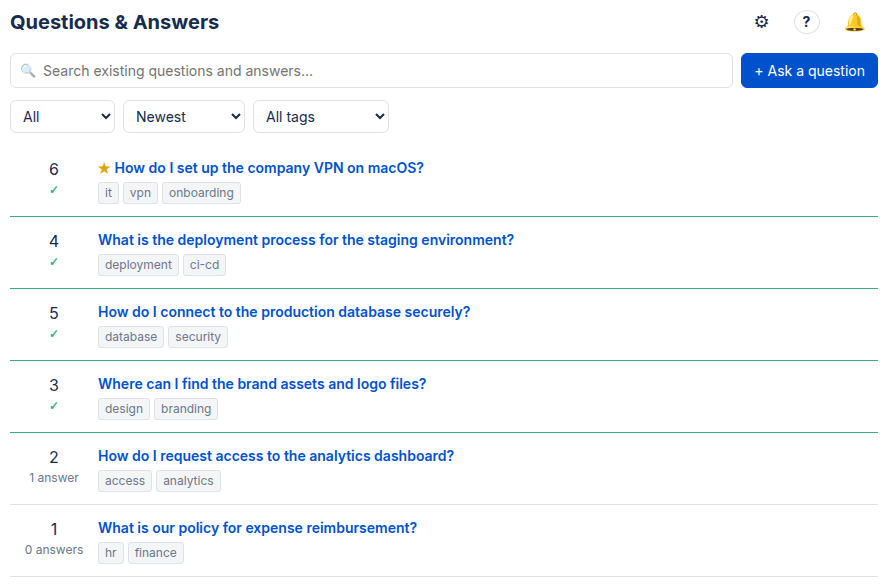
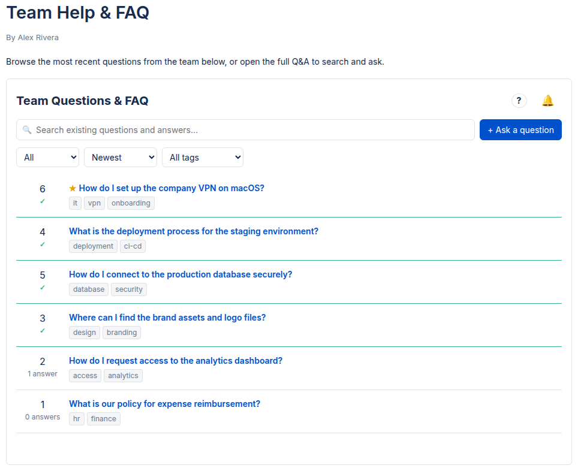
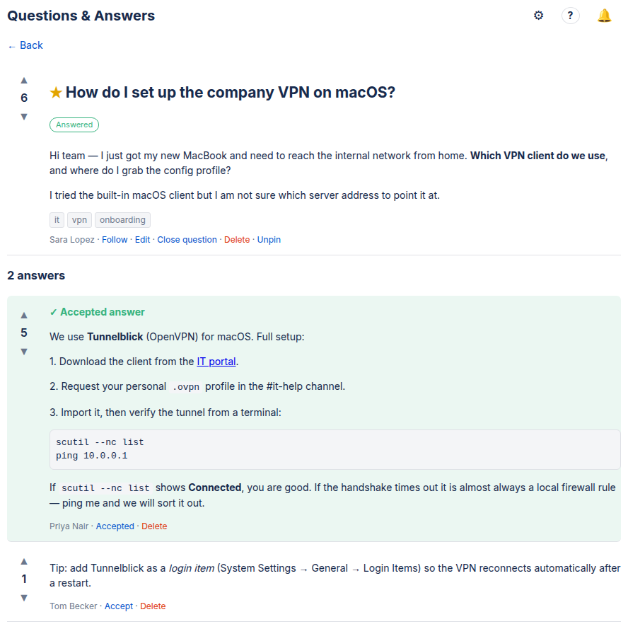
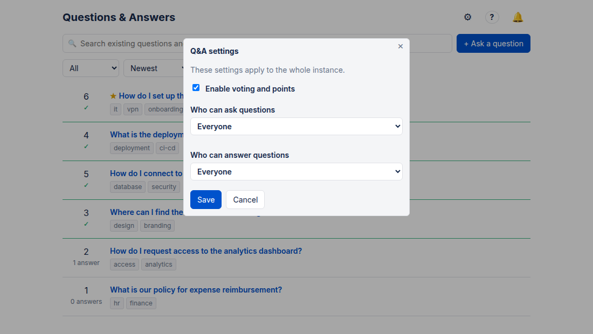

A fast, private Q&A & FAQ for Confluence: full-text search, voting, accepted answers and embeddable macros — 100% on Atlassian Forge.
30-day free trial · free for sites up to 10 users
Built to fix the things that make other Q&A tools frustrating — search that misses answers, data that disappears, accept buttons locked to one person, and no way to embed Q&A where people work.
Qurio's full-text search reads the entire thread — question and every answer, not just the title. Type a word that only appears deep in an answer and Qurio still surfaces the right question. Filter by space, tag or status and sort by newest, most voted or unanswered.

Drop the Qurio macro onto any Confluence page. Show the full question list or a compact teaser of the latest questions that links through to the full hub. Give each embed its own heading, scope it to the space or the whole instance, and pin it to a fixed tag — so the same app powers both a team Q&A and a curated FAQ.

Up/down-vote questions and answers, mark the accepted answer — the author or a moderator can, so there is no lockout — and reward your most helpful people with an expert leaderboard (accepted +10, answer upvote +2, question +1). Prefer a quieter space? Voting and points can be switched off completely.

Qurio runs entirely on Atlassian Forge. Your content lives in Forge Storage inside your own Atlassian instance — no external server, no third-party data store, no web or AI scraping. Add moderators, control who may ask vs. who may answer, pin featured questions, and run in English, German, Spanish or French.

The details that separate a Q&A people actually use from one they abandon.
Free for small teams, and cheaper per user as your deployment grows. 30-day free trial, no commitment.
| Users | Price / user / month |
|---|---|
| 1–10 | Free (Atlassian small-team) |
| 11–100 | $0.90 |
| 101–250 | $0.75 |
| 251–1000 | $0.55 |
| 1001–5000 | $0.40 |
| 5001+ | $0.30 |
Billed through Atlassian. Final pricing is shown on the Marketplace listing.